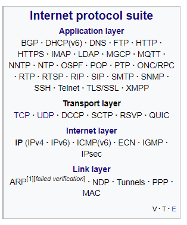

So what actually is a protocol?
When two devices want to share information, they must do so in a common format that is agreed beforehand. This format is called a protocol, which sounds scary, but is actually quite easy to understand as we use protocols everywhere.
A close analogy in the real world to protocols is verbal communication; when you talk to another person, you have both agreed prior to the discussion on the meaning of each word and how sentences should be structured. This way, when you say a word, you can guarantee the other party will interpret it correctly. The same goes for computers: when computers transmit data, they have both already agreed in which format to interpret the data.
Computers use 1s and 0s to communicate (binary), so instead of using sounds to form words like humans do, computers use combinations of 1s and 0s. These 1s and 0s are called bits and are typically grouped in groups of 8 called bytes. (You may also hear the word ‘octet’ being used interchangeably with ‘byte’. This is because a byte used to vary in length, but nowadays pretty much every computer has 8-bit bytes.) How these 1s and 0s are interpreted is up to the protocol in question.
As an example, messages on the internet are typically sent as packets, which are little batches of data. The IP protocol states, that the first 128 or so bits specify which computer to send the packet to, and the rest of the bits are the actual data being transmitted. This is a gross oversimplification; a more in-depth explanation can be found in Internet Protocol.
Protocols are usually based on other protocols and are organized into layers. This makes protocols easier to understand as each layer is just a protocol on top of the previous layer. Here is a visualisation of the different protocol layers, with the highest-level ones being at the top, and the lowest-level ones being at the bottom.
The link layer protocols are the protocols that connect hardware to the internet through physical cables. The internet layer protocols are the protocols that allow individual packets (messages) to be sent over the internet. The transport layer protocols handle higher-level concepts like sessions and error handling. Finally, the application layer protocols define very specific protocols used in specific contexts such as web browsing, remote operation of devices, etc.
Note 2 points:
In this guide we cover the most popular of these protocols, and then hopefully you will be able to research the rest to your heart’s content!